Duino Aurisina · Località Duino 69/A · Neubau
Elegie Duino — acht neue Wohnungen in Duino
Acht neue Wohnungen in dem Ort, an dem Rilke die Duineser Elegien begann. Sechs sind noch frei.
- Frei 6 von 8
- Zwei und drei Zimmer 70–102 m²
- Ab € 261.000 zzgl. MwSt.
- Klasse A laut Planung
- Fertigstellung bis 2027
Heute · 12. August 2026
Das Grundstück ist die Lücke zwischen den Häusern.
Ein Drohnenfoto: die Burg, das Meer, der Ort. Hinzugefügt ist nur der magentafarbene Umriss des Grundstücks von Elegie, vorn an der Straße.
Morgen · Fertigstellung bis 2027
An seiner Stelle: das Haus.
Wir haben es aus den Plänen des Studio Architettura Soldano in 3D nachgebaut: Maße, Fenster, Veranden, Ausrichtung. Der Ort ringsum ist der echte, aus den Vermessungsdaten der Region. Kein Bild hier ist mit KI erzeugt.
01 · Hier wohnen
Ein neues Zuhause, im Grünen von Duino.
Acht Wohnungen auf zwei Geschossen zwischen Hecken und Gärten, fünf Gehminuten von der Burg. Im Erdgeschoss der eigene Garten, im Obergeschoss die Veranda.
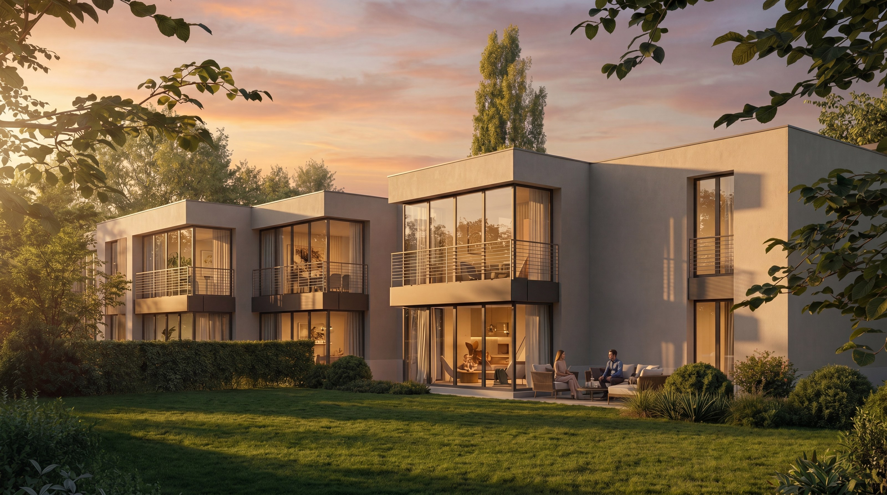
Erdgeschoss
Abends im Garten.
Jede Wohnung im Erdgeschoss hat ihren eigenen Garten, umschlossen von immergrünen Hecken: von 47 m² bis 280 m². Drei sind noch frei.
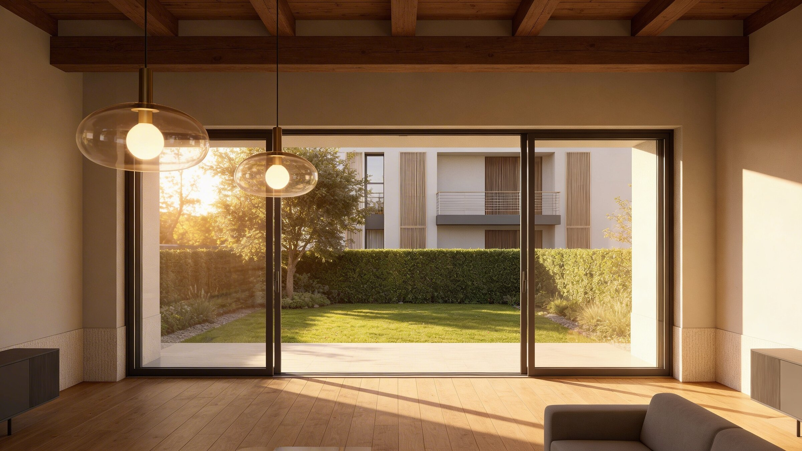
Innen
Das Wohnzimmer öffnet sich ins Grüne.
Große Fensterflächen nach Süd-Südost, zum Garten oder zur Veranda. Böden aus Feinsteinzeug, Eichenparkett in den Schlafzimmern.
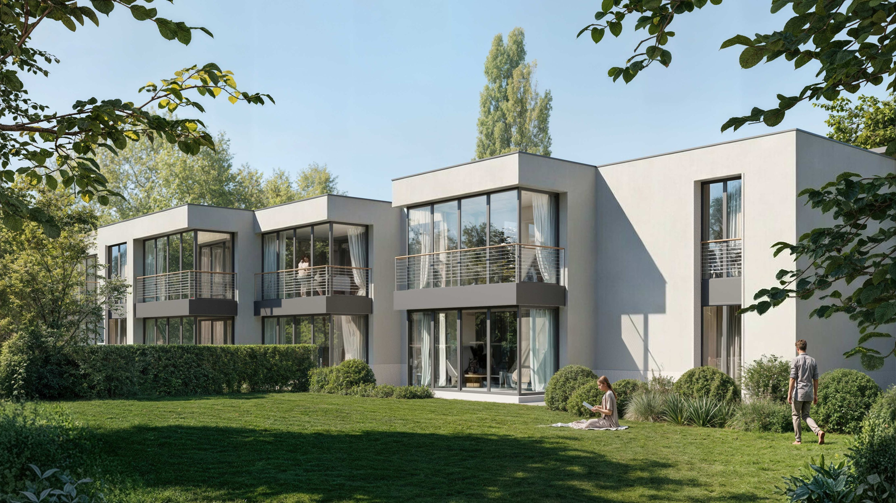
Obergeschoss
Oben die Veranda.
Die Wohnungen im Obergeschoss haben eine verglaste Veranda mit Brüstung über den Gärten und in einigen Räumen sichtbare Holzbalken.
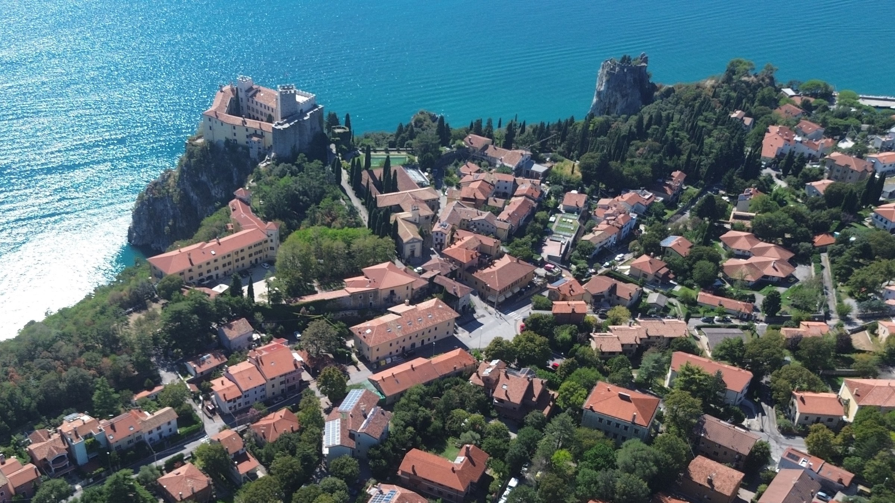
Duino
Zu Fuß: die Burg und das Meer.
5 Min. zu Fuß bis zur Burg, 9 Min. bis zum kleinen Hafen; der Rilke-Weg beginnt 4 Min. von zu Hause.
Weitere Bilder des Projekts
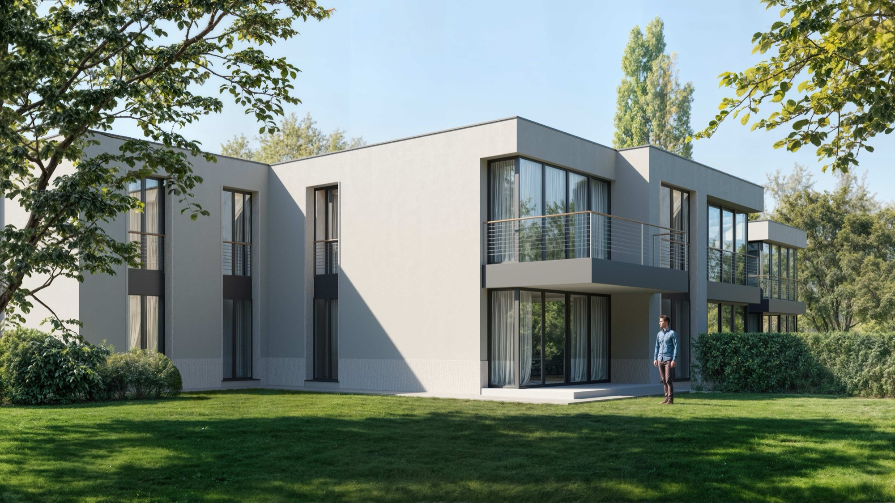
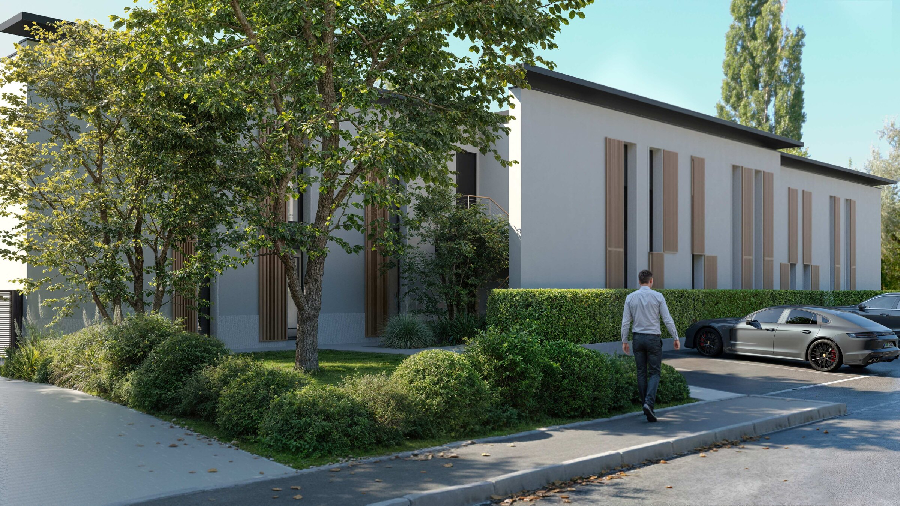
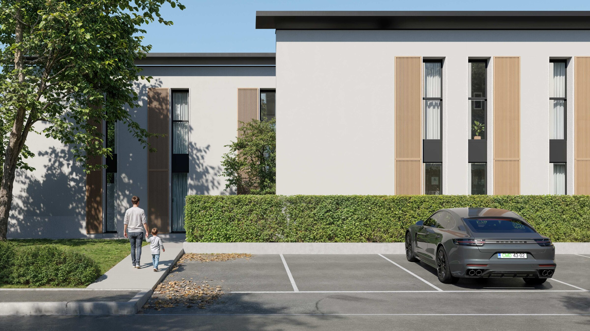
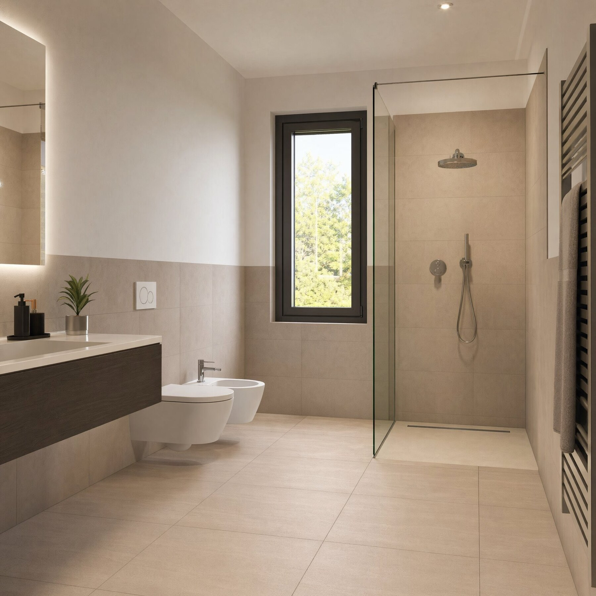
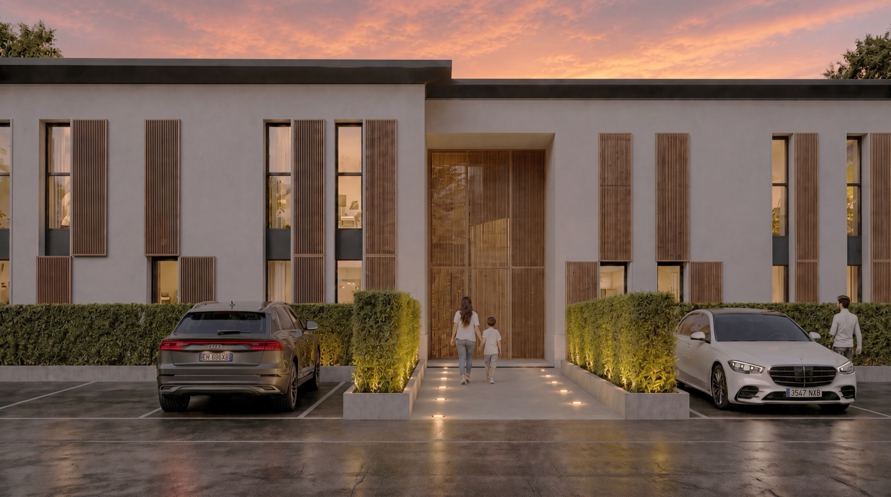
Projekt-Renderings sind mit „Rendering“ markiert; mit künstlicher Intelligenz erzeugte oder bearbeitete Bilder mit „KI“, animierte mit „KI · Animation“: Sie geben eine Vorstellung, sie sind keine Fotografien.
02 · Der Name
Januar 1912.Schloss Duino
Rainer Maria Rilke ist seit Oktober 1911 Gast der Fürstin Marie von Thurn und Taxis auf Schloss Duino.
Eines Morgens, so erzählt die Fürstin, weht eine heftige Bora, doch die Sonne scheint, und das Meer glänzt wie von Silber überzogen. Rilke geht auf den Bastionen unterhalb des Schlosses auf und ab, hoch über den Felsen, und überlegt, wie er einen lästigen Brief beantworten soll. Er bleibt stehen: Im Brausen des Windes scheint ihm eine Stimme einen Vers zuzurufen. Am Abend hat er die erste Elegie.
Es werden zehn Elegien. Er vollendet sie im Februar 1922 in der Schweiz und veröffentlicht sie 1923 unter dem Namen des Ortes, an dem sie begonnen hatten.
Wer, wenn ich schriee, hörte mich denn aus der Engel
Ordnungen? und gesetzt selbst, es nähme
einer mich plötzlich ans Herz: ich verginge von seinem
stärkeren Dasein.
03 · Die Wohnungen
Wählen Sie Ihre Wohnung
Tippen Sie eine Wohnung im Modell oder in der Liste an. Mit der Maus können Sie um das Haus herumgehen.
Preise zzgl. MwSt. · ein Außenstellplatz pro Wohnung inklusive.
Alle Grundrisse nebeneinander →04 · Grundrisse
Jede Wohnung, Grundriss für Grundriss.
Die sechs freien Wohnungen nebeneinander. Merken Sie sich mit dem Herz die, die Ihnen gefallen, und vergleichen Sie sie.
-
1Erdgeschoss
Dreizimmerwohnung · 97,24 m²
2 Schlafzimmer · 2 Bäder · Garten 280,02 m²
€ 441.000 + MwSt.
-
2Erdgeschoss
Dreizimmerwohnung · 97,44 m²
2 Schlafzimmer · 2 Bäder · Garten 51,65 m²
€ 396.000 + MwSt.
-
3Erdgeschoss
Zweizimmerwohnung · 70,40 m²
1 Schlafzimmer · 1 Bad · Garten 47,48 m²
€ 288.000 + MwSt.
-
6Obergeschoss
Dreizimmerwohnung · 97,44 m²
2 Schlafzimmer · 2 Bäder · Veranda
€ 351.000 + MwSt.
-
7Obergeschoss
Zweizimmerwohnung · 70,40 m²
1 Schlafzimmer · 1 Bad · Veranda
€ 261.000 + MwSt.
-
8Obergeschoss
Dreizimmerwohnung · 102,38 m²
2 Schlafzimmer · 2 Bäder · Veranda
€ 396.000 + MwSt.
Aus den Verkaufsplänen des Studio Architettura Soldano (30.06.2026), mit Beispielmöblierung. Die Verkaufsfläche schließt die Veranda ein. Verkauft: Wohnungen 4, 5.
05 · Was es kostet
Eine Wohnung mit Garten: was kostet sie?
Von € 288.000 bis € 441.000 zzgl. MwSt. Mit der MwSt. für die Erstwohnung und den Steuern von € 300.120 bis € 459.240: alles inklusive außer dem Notar.
-
3 Zweizimmerwohnung · 70,40 m²
eigener Garten, 47,48 m²
€ 288.000 + MwSt.
- Erstwohnung, alles inklusive
- € 300.120
- Zweitwohnung, alles inklusive
- € 317.400
-
2 Dreizimmerwohnung · 97,44 m²
eigener Garten, 51,65 m²
€ 396.000 + MwSt.
- Erstwohnung, alles inklusive
- € 412.440
- Zweitwohnung, alles inklusive
- € 436.200
-
1 Dreizimmerwohnung · 97,24 m²
eigener Garten, 280,02 m² mit Stellplatz im Garten
€ 441.000 + MwSt.
- Erstwohnung, alles inklusive
- € 459.240
- Zweitwohnung, alles inklusive
- € 485.700
Im Obergeschoss mit Veranda: ab € 261.000 zzgl. MwSt.
Die Kosten, Wohnung für Wohnung
| PreisZzgl. MwSt., laut Preisliste | |
| Auf die Wohnung, an den Bauträger | |
| Register-, Hypotheken- und Katastersteuerje 200 €, fest | |
| Summe Wohnung | |
Unverbindliche Rechnung. Die Voraussetzungen für die Erstwohnung (sie hängen vom Wohnsitz in Italien ab) und die Steuern prüft der Notar; sein Honorar und eine eventuelle Finanzierung sind nicht enthalten. Die Preisliste kann sich ändern: Der endgültige Preis wird im Kaufangebot festgehalten.
Wie Sie zahlen
- 10 %Bei der Reservierung—
- 20 %Beim Vorvertrag, vor dem Notarvoraussichtlich bis Ende 2026—
- 70 %Beim notariellen Kaufvertragbis Ende 2027—
Beträge auf den Preis der oben gewählten Wohnung. Die MwSt. wird nach den Rechnungen des Bauträgers gezahlt; die Einzelheiten regeln das Kaufangebot und der Vorvertrag.
Eine Wohnung kaufen, die noch gebaut wird, mit dem Schutz des Gesetzes
- Der Vorvertrag wird vor dem Notar unterzeichnet.
- Alle Zahlungen vor dem Kaufvertrag, Anzahlungen und Vorauszahlungen, sind durch eine Bürgschaft einer Bank oder einer Versicherung gesichert, die der Bauträger stellen muss.
- Beim Kaufvertrag übergibt der Bauträger eine zehnjährige Versicherung auf das Gebäude.
Italienisches Gesetzesdekret 122/2005, geändert durch Gesetzesdekret 14/2019: Es gilt für Käufer, die natürliche Personen sind. Jede Einzelheit prüft der Notar.
06 · Der Ort
Der Ort, vermessen.
Duino ist ein Ort mit wenigen Straßen zwischen Karst und Meer. Vom Tor von Elegie gehen Sie zu Fuß zur Burg, zum kleinen Hafen und zum Beginn des Rilke-Wegs; mit dem Auto nach Triest und zum Flughafen.
- Schloss Duino380 m5 Min.
- Rilke-Weg, Beginn280 m4 Min.
- Hafen von Duino650 m9 Min.
- Bushaltestelle „Duino centro“200 m3 Min.
- Lebensmittelladen im Ort180 m2 Min.
- Grundschulen (italienisch und slowenisch)180 m2 Min.
- Rilke-Weg bis Sistiana2,3 km30 Min.
- Bucht von Sistiana4,2 km7 Min.
- Portopiccolo4,2 km7 Min.
- Monfalcone7,4 km11 Min.
- Grenze zu Slowenien (Jamiano)8,0 km11 Min.
- Flughafen Triest18,4 km18 Min.
- Triest, Piazza Unità23,9 km30 Min.
Ringsum
Die Steilküste, das Schutzgebiet, das Meer.
Unterhalb des Ortes liegt das Naturschutzgebiet der Steilküste von Duino: 107 Hektar seit 1996, die einzige hohe Felsküste an Italiens nördlicher Adria. Der Rilke-Weg folgt ihr rund 1,7 km bis zur Bucht von Sistiana. Weiter östlich, Richtung Triest, das Meeresschutzgebiet Miramare.
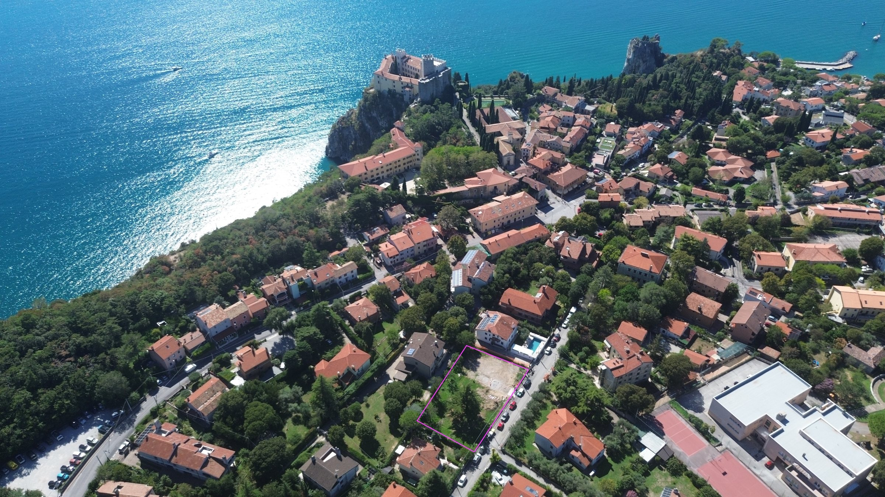
07 · Das Licht
Die Sonne, Stunde für Stunde.
Die Veranden schauen nach Süd-Südost (164°). Wählen Sie einen Tag und eine Uhrzeit: Licht und Schatten sind für Duino berechnet, mit dem echten Gelände, den Häusern und den Bäumen ringsum.
Die Sonne über Elegie
Stunden direkter Sonne auf der Verglasung der Veranda am gewählten Tag
Wie es berechnet ist
Berechnet auf der äußeren Verglasung jeder Veranda (bei Wohnung 1 an der Kante des Laubengangs), in anderthalb Metern Höhe, alle fünf Minuten, mit dem Gelände (LiDAR der Region), den Nachbarhäusern und dem Haus selbst. Die zweite Zahl zählt auch die Bäume als volle Kronen: die strengste Rechnung, denn im Winter sind viele Kronen kahl. Wolken gibt es keine; Auf- und Untergang gelten für den freien Horizont.
08 · Bauweise
Gebaut in Schichten.
Beim Scrollen entsteht das Haus wie auf der Baustelle, vom Fundament bis zum Dach. Jede Schicht mit den Worten der Baubeschreibung.
Heute
Das Grundstück nach dem Abriss.
Vor Baubeginn wurde das leere Grundstück in 3D erfasst: Sie können dort umhergehen, wo die Wohnungen entstehen.
Umgekehrte Stahlbetonbalken.
Unter dem Haus ein Fundament aus Stahlbeton mit umgekehrten Balken, bemessen nach dem geologischen Gutachten und der Statik. Zwischen Erdreich und Bodenplatte des Erdgeschosses ein belüfteter Hohlraum.
travi rovesce, dimensionate in conformità alle risultanze della relazione geologica e del calcolo strutturale — aus der BaubeschreibungKreuzweise verleimte Fichte.
Alles über dem Boden tragen massive Holzplatten: technisch getrocknete Fichtenbretter, kreuzweise verleimt, mit CE-Kennzeichnung und Europäischer Technischer Bewertung. Dieselbe Platte bildet Außenwand und Wohnungstrennwand, mit Schichten, die die Wohnungen akustisch trennen.
il legno impiegato proviene esclusivamente da foreste gestite in modo sostenibile e certificate PEFC — aus der BaubeschreibungHolz auch über dem Kopf.
Zwischen den Geschossen wieder eine X-LAM-Decke; das Dach liegt auf Brettschichtholzbalken mit doppelter Kreuzschalung, in einigen Räumen des Obergeschosses sichtbar. Über den Decken ein leichter Estrich für Leitungen und Kabel.
struttura in travi in legno lamellare […] abbinata a un doppio tavolato incrociato — aus der BaubeschreibungSteinwolle, außen.
Die Wände sind außen mit Steinwolle gedämmt: nicht brennbar (Klasse A1), konform mit den italienischen Mindestumweltkriterien, Stärke laut Energieberechnung. Die echte Oberfläche ist ein Putz in dunklem warmem Grau; hier bleibt das Modell weiß, wie ein Architekturmodell.
tonalità grigio caldo scuro (tipo Sandtex n. 36) come da progetto approvato in sede di autorizzazione paesaggistica — aus der BaubeschreibungVerbundglas, anthrazitfarbene Rahmen.
Fenster und Fenstertüren mit thermischer Trennung in Anthrazitgrau RAL 7016, mit Zweifach-Isolierglas aus Verbundglas mit Low-E-Beschichtung: Bricht eine Scheibe, bleibt sie ganz. Die Veranden im Obergeschoss haben Metallgeländer in derselben Farbe.
vetrocamera stratificata in lastre di vetro 3+3 mm interno, camera 14/16 mm, vetro 4+4 mm esterno — aus der BaubeschreibungSenkrechte Lamellen zur Straße.
Auf der Nordseite, zur Straße, laufen die Läden neben den hohen Fenstern: senkrechte Lamellen aus Verbundwerkstoff, in den Ansichten des Architekten in Holzoptik. Dieselben Lamellen am gemeinsamen Eingang.
realizzati in composito a doghe verticali — aus der BaubeschreibungEin Dach, das arbeitet.
Das Flachdach ist mit zwei kreuzweise verlegten Bahnen abgedichtet und mit Flusskies beschwert. Es trägt die Solarmodule jeder Wohnung und die abgeschirmten Außengeräte der Wärmepumpen. Ränder und Rinnen aus anthrazitfarbenem Aluminium.
Sulle porzioni di tetto piano saranno alloggiati gli impianti fotovoltaici dedicati a ciascuna unità immobiliare — aus der BaubeschreibungGärten, Hecken, Stellplätze.
Jede Wohnung im Erdgeschoss hat ihren eigenen Garten, von immergrünen Hecken umschlossen, bepflanzt mit heimischen Karstarten, die wenig Wasser brauchen. Stellplätze aus wasserdurchlässigem Beton, jeder für eine Ladestation vorbereitet; motorisierte Einfahrtstore.
Ciascuna unità al piano terra sarà dotata di giardino privato di pertinenza esclusiva — aus der Baubeschreibung09 · Baubeschreibung
Die Entscheidungen, ausführlich.
Zuerst das, was Sie jeden Tag nutzen. Oberflächen und Farben, für alle, die es genau wissen wollen, darunter.
Luft-Wasser-Wärmepumpe
Eine pro Wohnung: heizt, kühlt und bereitet Warmwasser ohne Gas, mit 200-Liter-Speicher. Gebläsekonvektoren in jedem Raum, steuerbar per Handy.
Photovoltaik für jede Wohnung
Jede Wohnung hat ihre eigene Anlage auf dem Dach und ihren eigenen Zähler, bis 6 kW.
Laden des Autos
Jeder Stellplatz ist für eine Elektro-Ladestation vorbereitet.
Sicherheitstür
Gepanzerte Eingangstür Typ Stark oder gleichwertig, Widerstandsklasse 3 oder höher.
Vorinstallationen
Alarmanlage, Glasfaser (wo verfügbar), Datennetz und smarte Lichtsteuerung.
Video-Gegensprechanlage
Zeichnet auf, wer geklingelt hat, wenn niemand öffnet.
Innentüren
Laminat in Elfenbein oder Weiß mit horizontaler Maserung, Magnetschloss.
Toleranzen und Änderungen
Die Raummaße können um 5 % von den Plänen abweichen; der Verkäufer kann Materialien und Lösungen ändern, ohne Wert oder Leistung zu mindern.
Oberflächen und Farben im Detail
10 · Wer dahintersteht
Drei Namen, eine Baustelle.
Ein Bauträger, der baut, ein Büro, das jede Wand gezeichnet hat, eine Agentur, die die Gegend kennt.
Bauträger
Ennio Riccesi Holding entwickelt und baut das Projekt und berichtet in seinem Nachhaltigkeitsbericht über Umwelt, Menschen und Unternehmensführung.
riccesi.euArchitektur
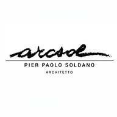
Studio Architettura Soldano, Triest: Arch. Pier Paolo Soldano und Arch. Alessandra Belleli.
studioarchitetturasoldano.it11 · Kontakt
Eine Besichtigung, nach Vereinbarung.
Grundrisse, Baubeschreibung, Wahl der Materialien, ein Besuch auf der Baustelle: Schreiben Sie uns oder rufen Sie uns an.
Danke, Ihre Anfrage ist angekommen.
Wir melden uns so bald wie möglich. Für Dringendes: +39 331 8940822.